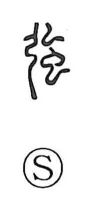

強

Uncategorized
Kun: tsuyoi, tsuyomaru, tsuyomeru, shiiru, shiite | On: kyo, go
strong ・ to compel ・ to force ・ to strive
Explanation
This character is a compound of 弘 and 虫. 弘 shows a bowstring taken off the bow, the cord hanging from the limb, while 虫 points to silkworm gut: white threads drawn from silkworms, treated, stretched, and dried. Such gut made exceptionally tough, resilient bowstrings—also prized as fishing line—and from that concrete image the character came to mean “strong.” By extension it also expresses exertion and pressure: to strive with effort, and to press or compel something to be done, that is, to act by force.